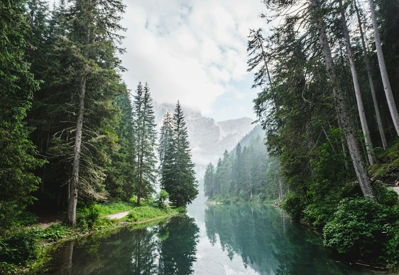

Historical • Spiritual
Historical • Spiritual
Deekshabhoomi Sacred Stupa
A globally venerated Buddhist monument featuring a 120-ft high hollow architectural dome where Dr. B. R. Ambedkar embraced Buddhism alongside 600,000 followers in 1956.
Discover Nagpur's premier historical monuments, tranquil urban lakes, spiritual sanctuaries, and wildlife reserves. Use our interactive search and filter controls to customize your itinerary.
Historical • Spiritual
A globally venerated Buddhist monument featuring a 120-ft high hollow architectural dome where Dr. B. R. Ambedkar embraced Buddhism alongside 600,000 followers in 1956.
 Lakes • Promenade
Lakes • Promenade
Historic 200-year-old Bhonsle reservoir known for colorful illuminated fountains, wide pedestrian walking paths, open-air snack kiosks, and vibrant sunset vistas.
 Lakes • Nature Trails
Lakes • Nature Trails
The largest natural lake inside Nagpur and the sacred origin of the Nag River. Surrounding walking gardens provide a peaceful sanctuary for birdwatchers and families.
 Wildlife • Tiger Reserve
~85 km from Nagpur
Wildlife • Tiger Reserve
~85 km from Nagpur
The celebrated forest home of Mowgli and Kipling's Jungle Book. Teeming with Royal Bengal tigers, leopards, Indian bison (gaur), and over 285 bird varieties.
 Tiger Reserve • Premier Safari
~140 km from Nagpur
Tiger Reserve • Premier Safari
~140 km from Nagpur
The "Jewel of Vidarbha" and Maharashtra's oldest national park. Renowned globally for high tiger sighting probabilities, bamboo thickets, and deep natural lakes.
 Historical • Pilgrimage
~48 km from Nagpur
Historical • Pilgrimage
~48 km from Nagpur
An ancient hilltop citadel steeped in epic folklore and Kalidasa's literary heritage. Khindsi Lake below offers speedboat rides, pedal boats, and camping resorts.
 Spiritual • Modern Heritage
~18 km from Nagpur
Spiritual • Modern Heritage
~18 km from Nagpur
Celebrated as the Lotus Temple of Central India. A gleaming white marble sanctuary dedicated to international peace, housing a sacred sandalwood Buddha statue amidst Japanese gardens.

Nature • Safari Park ~10 km from NagpurOne of India's largest international zoological and safari bio-parks spanning nearly 1,900 hectares of forest, offering guided day safaris, nocturnal trails, and reservoir wetlands.
We could not find any tourist places matching your current search or category filter. Try clearing your search term or exploring all categories.